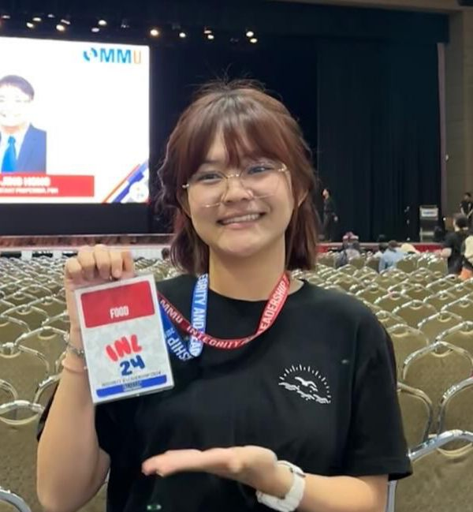

CHAN KAH YONG

cky734@gmail.com
 +60-109586656
+60-109586656
 Link to LinkedIn
Link to LinkedIn
About Me
My name is Kah Yong and I’m an extroverted person who loves socializing
and meeting new people. I’m currently studying computer science, specializing in game development. I find it really exciting to work on creative projects,
especially when I can collaborate with others and share ideas.
It’s awesome to combine my passion for tech with my love for connecting with people.
Education
BACHELOR OF COMPUTER SCIENCE (HONS.)
- Current CGPA: 3.93
- October 2023 - October 2026
- Multimedia University
STPM
- CGPA: 3.92
- 2021 - 2023
- St. Michael's Institution
SPM
- GRADE: 9As
- 2016 - 2020
- SMK Convent Ipoh
Work Experience
Genting Malaysia Berhad as Guest Service Assistant
- April 2023 - September 2023
- Manage guests’ membership, including issuing new cards and processing renewals
- Coordinate with other departments to fulfill guests’ requests and resolve issues
- Click here for Employee Testimonial
Lavie Clinic as Promoter
- December 2022
- Set up booths or promotional stands and stock products
- Distribute product brochures to source new sales opportunities
Smart Talent as Teacher’s Assistant
- Assist classroom teacher in performing specific duties as assigned
- Help maintain order in the classroom, monitors students to keep them on task